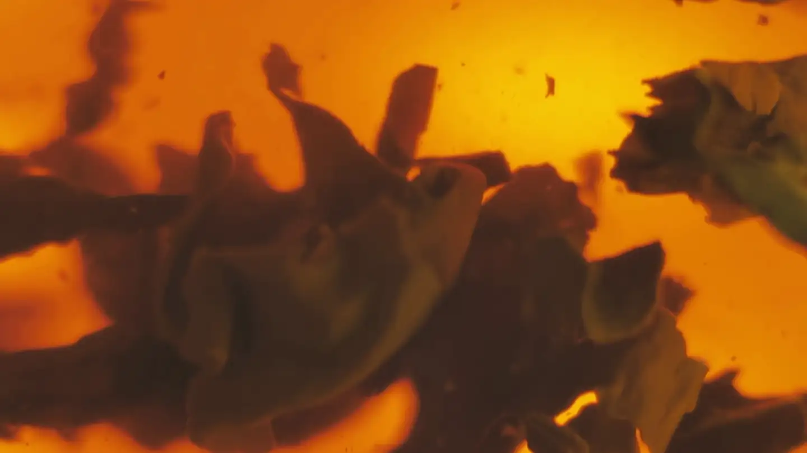
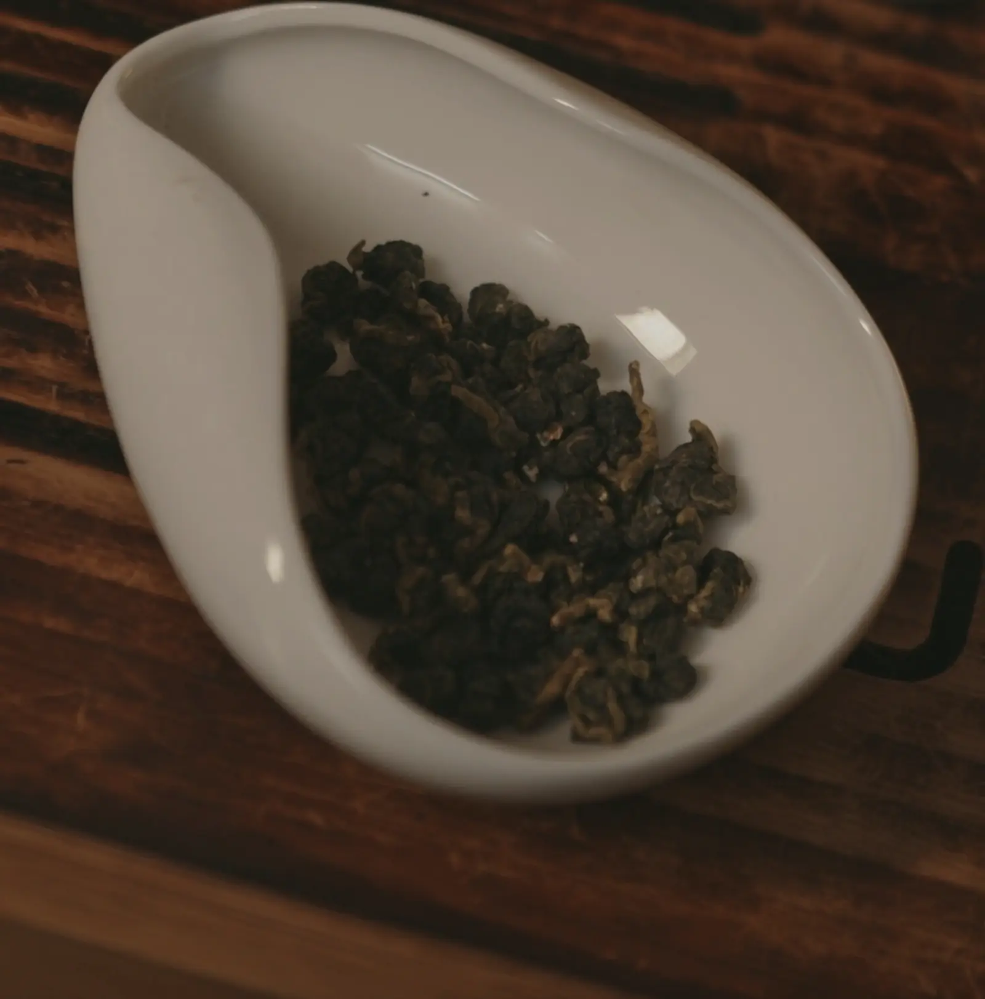
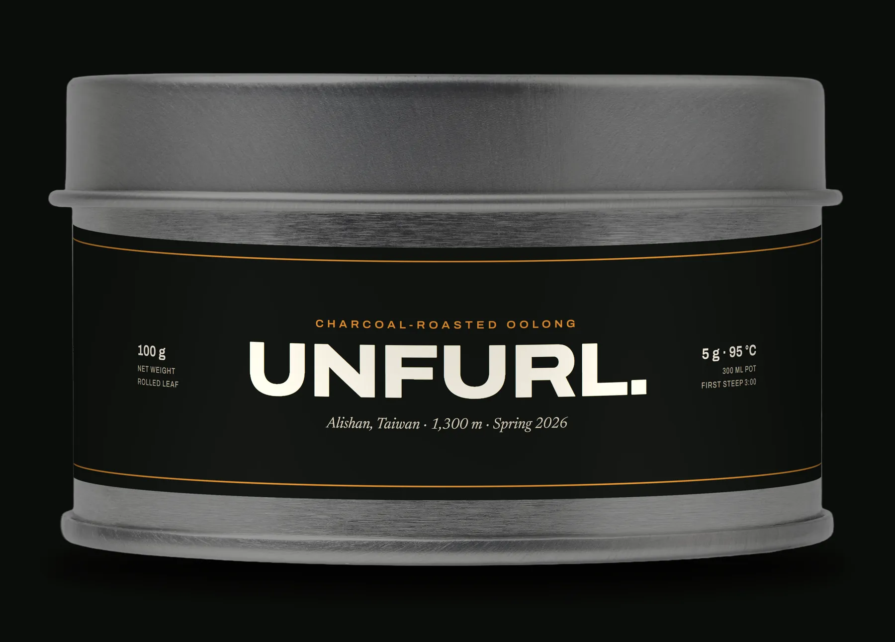
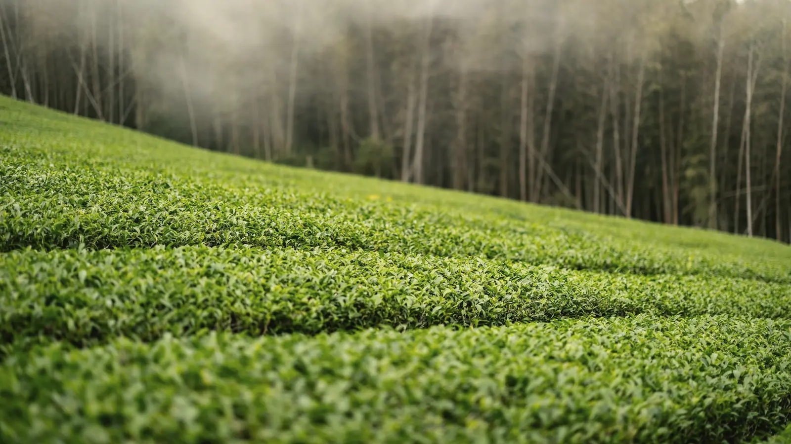
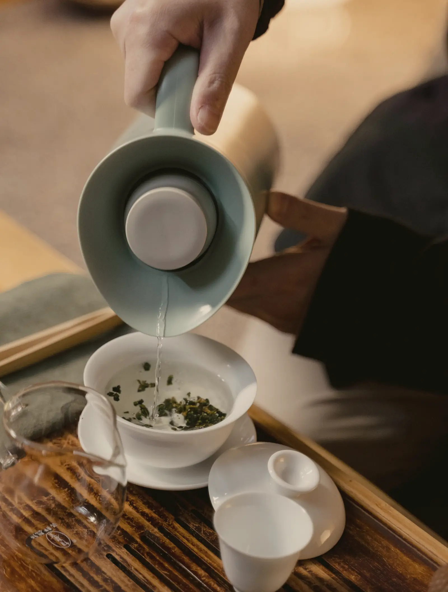

UNFURL. One charcoal-roasted oolong, steeped in front of you
One charcoal-roasted oolong, rolled into knots on a ridge in Alishan and sold in one S$42 tin. Scroll, and watch the first pot open.
5 g leaf300 ml95 °C
Keep scrolling to steep it.
Steep
3:00
Poured now deep amber
Pour it all
Every drop, out of the pot. Leaf left in water keeps steeping. The next pot takes two minutes, because the leaf is already open.
Steep time 3:00. Poured now, the liquor would be deep amber. Pour it all: Every drop, out of the pot. Leaf left in water keeps steeping. The next pot takes two minutes, because the leaf is already open.
Three more pots from the same leaf.
The leaf you just watched open isn't finished. Pour the pot off completely, every drop, and fill it again with water at 95 °C. These are our notes for the rest of the dose.
The film above is the first pot, filmed through the glass and slowed so you can see the leaf move.
- 2:00Second pot · The fullest cup of the fouramberThe leaf is already open, so it gives quickly: honey and roast together, and the thickest body of the day.
- 3:00Third pot · The roast steps backgoldOrchid comes up from under the charcoal, and the finish runs long and mineral.
- 5:00Fourth pot · Sweet waterpale goldThin, clean and sweet. Leave this one to cool; it is better cold.

Before the water, a knot.
Rolled oolong is folded, not cut. For two days after picking, the garden's rolling room wraps each batch in a cloth sack, presses it into a ball and rolls it, then shakes it loose and rolls it again, 36 times, until every leaf set is a dark knot the size of a peppercorn.
Nothing is broken on the way. That is the whole test of a rolled oolong, and it takes three minutes: put it in hot water and see whether whole leaves come back out.

One tin. That's the shop.
100 g of the spring roast under a slip lid. At 5 g a pot and 4 steeps from each, it makes 80 pots of tea.
S$42 ÷ 80 pots = S$0.53 a pot
S$42delivered free from 2 tins
Order the tin
1,300 m above Shizhuo.
A family garden on a ridge in the Alishan range, Chiayi County, where the fog comes in most afternoons from May. Qingxin oolong, picked by hand on 21 April 2026.

Three ways to steep it.
| Method | Leaf | Water | Time |
|---|---|---|---|
| Pot | 5 g | 300 ml at 95 °C | 4 steeps, the first 3 min |
| Gaiwan | 6 g | 100 ml at 100 °C | 7 short steeps |
| Cold | 10 g | 1,000 ml, cold | 8 hours, fridge |